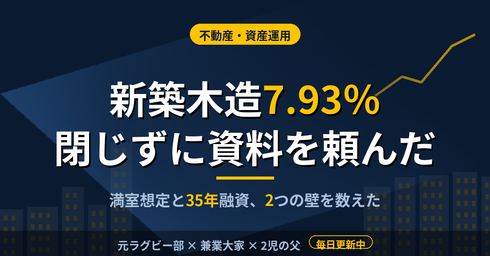
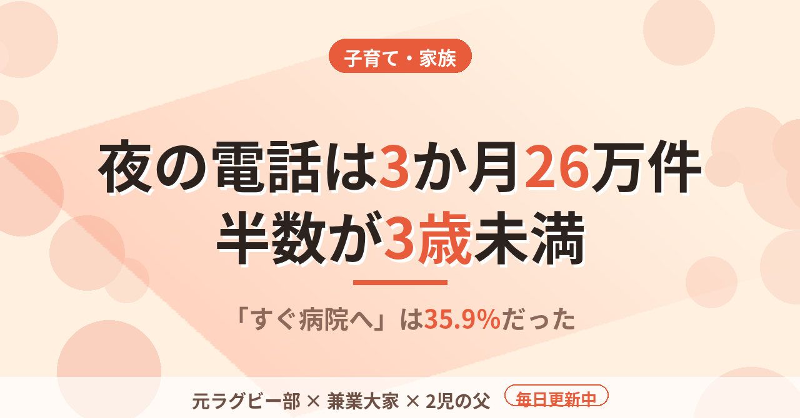
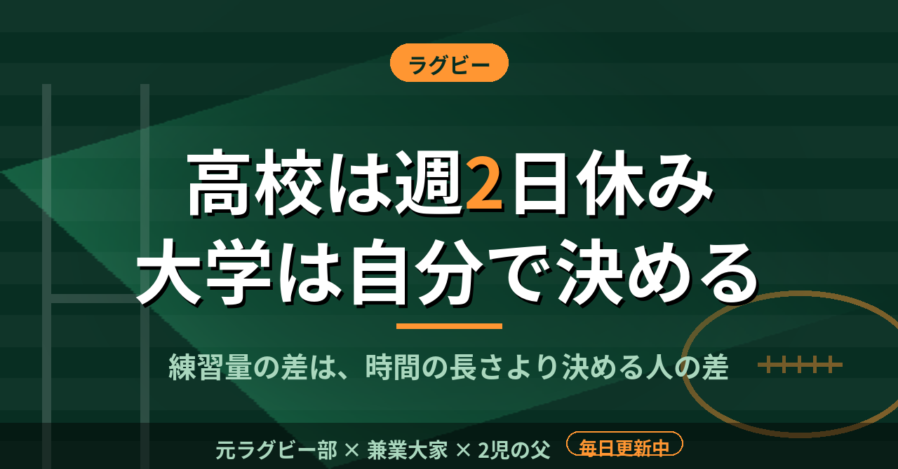
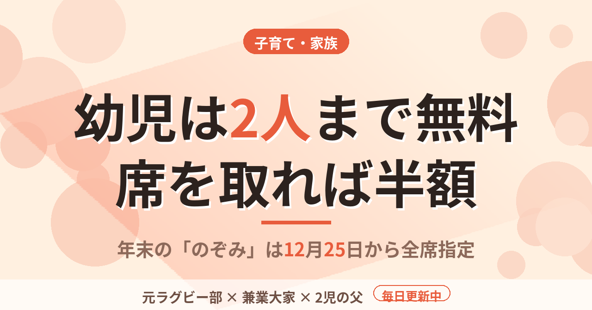

hohemaro15
ラグビー20年、不動産1棟。調べてから書く記録
このサイトについて
小学5年でラグビーを始めて、大学まで20年続けた。大阪の激戦区で6年、同志社大で4年。ポジションはユーティリティバックス。
今はメーカーで設備の電気を担当しながら、兵庫県尼崎市に木造9戸の一棟アパートを運用している。2児の父。
経験談だけで終わらせないために、書く前に必ず制度と統計を調べることにしている。数字が確認できなかった話は書かない。
書いていること
ラグビー
小5から大学まで20年。大阪の激戦区で見たこと、カテゴリが上がるたびに起きたこと。
不動産・資産運用
2016年に検討を始めて2026年に1棟目。判断基準と、断り続けた10年の話。
健康・トレーニング
増量の失敗と成功、サプリで肝臓の数値を悪くした経験、続けている設計。
子育て・家族
2歳と0歳を育てながらの時間の使い方と、資産形成の時間軸。
最近の記事
-

不動産・資産運用マイソクを10秒見て、閉じずに資料を頼んだ。堺市西区・新築木造・利回り7.93％の提案
11月1日、楽待経由で1棟アパートの提案が届いた。大阪府堺市西区、今年3月に完成した新築の木造で、価格1億2,800万円、表面利回り7.93％。2棟目を探している僕の条件（価格1億6,500万円以内、利回り7.0％以上）…
-
 不動産・資産運用
不動産・資産運用
築10年の木造は14年で償却。初めての申告の前に、9戸の大家が建物の年数を数えた
3月31日に引渡しを受けた尼崎の木造9戸は、来年2月に初めての不動産所得の申告を迎える。経費を一つずつ積んでいくと、最後に一番大きな数字として残るのが減価償却だった。現金は出ていかないのに、帳簿の上では毎年経費になる。そ…
-

子育て・家族#8000の相談は3か月で26万件、半数が3歳未満。2歳と0歳の父が夜の電話の中身を読んだ
子どもが熱を出すのは、なぜかだいたい夜だ。上の子は2歳、下の子は0歳。かかりつけの小児科が閉まったあとに、救急へ行くか朝まで待つかで迷う時間がある。その迷いのためにあるのが「#8000」という電話番号だ。年末年始を前に、…
-

ラグビー高校の部活は週2日休みが原則。同志社で4年やった僕が、大学の練習量を考えた
同志社のラグビー部に入った春、僕は高校より練習が長くなると身構えていた。4年間を終えて残った感覚は少し違う。差が大きかったのは、グラウンドにいる時間よりも、グラウンドの外の時間だった。…
-
 不動産・資産運用
不動産・資産運用
兵庫の木造は1,000万円で年11,200円。地震保険の料率表を9戸の大家が読んだ
11月の初めに、火災保険の契約期間と料率の動きを調べて記事にした。そのとき後回しにしたのが地震保険だった。地震保険は火災保険とセットでしか入れず、保険料の決まり方も補償の上限も、火災保険とは別のルールで動いている。1棟目…
-

子育て・家族幼児は大人1人に2人まで無料。2歳と0歳の父が年末の新幹線の切符を読んだ
上の子は2歳で、じっと座っていられる時間はまだ短い。下の子は0歳で、最近ようやく自分で動けるようになった。この2人を連れて年末年始に新幹線に乗るとしたら、切符は何枚要るのか。混む時期の前に、運賃の決まりを読んでおきたくな…